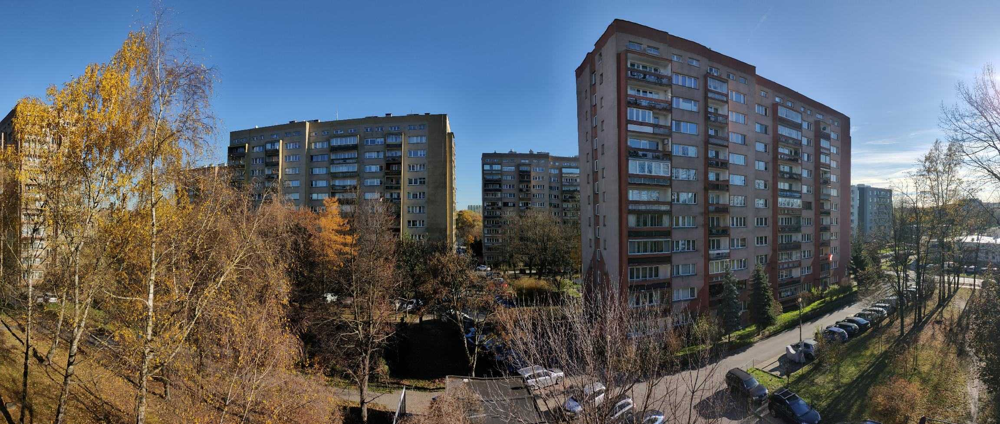

Model poglądowy. Układ i wymiary pomieszczeń według pomiarów, wysokość 2,5 m. Meble i sprzęty są pokazane orientacyjnie.
Otoczenie według panoramy z okna, godziny z dokładnością do ok. kwadransa.
Wczytywanie modelu…
